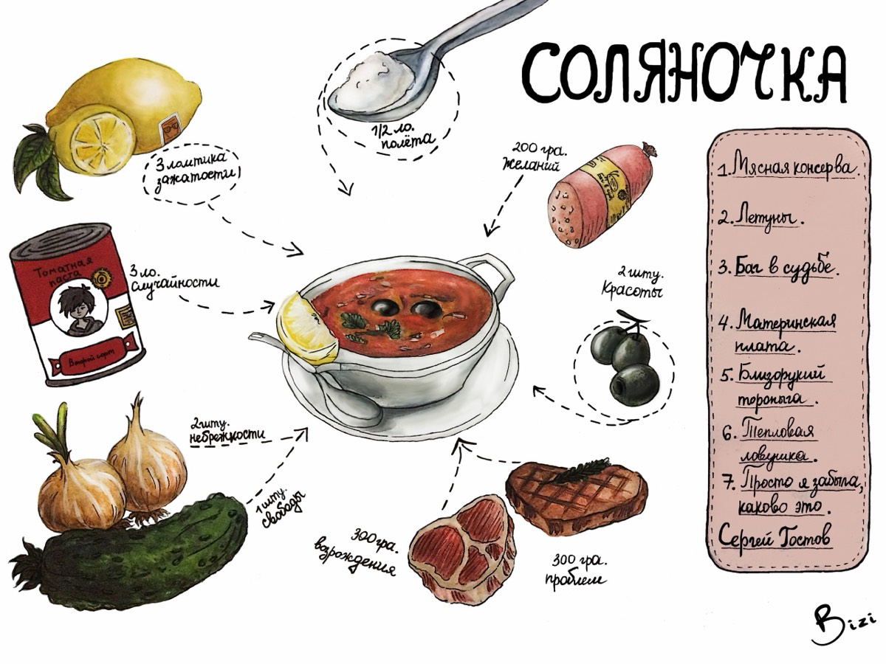

СЕРГЕЙ ГОСТОВ / ИНЖЕНЕРИЯ, ИГРЫ, ЛИТЕРАТУРА
Делаю вещи,
в которых
есть жизнь.
AI-системы, в которых важен результат. Игры, в которых важно ощущение. Истории, которые остаются с читателем.
Открыть портфолио ↘

ПРИДУМАНО
И СДЕЛАНО↗
И СДЕЛАНО↗
ПРИДУМАТЬСОБРАТЬИСПЫТАТЬПЕРЕПИСАТЬ
01 / ПРАКТИКА
У каждой работы
есть свой способ
быть полезной.


